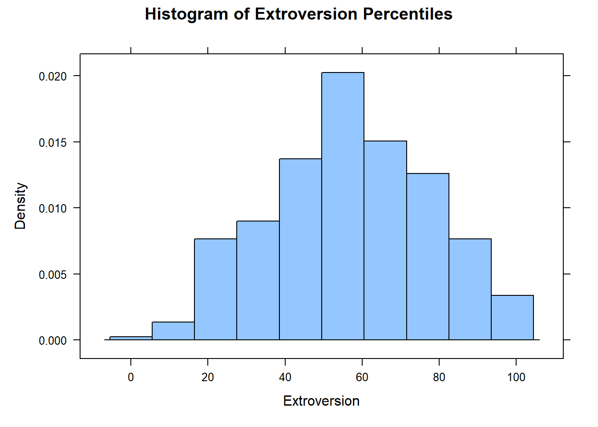
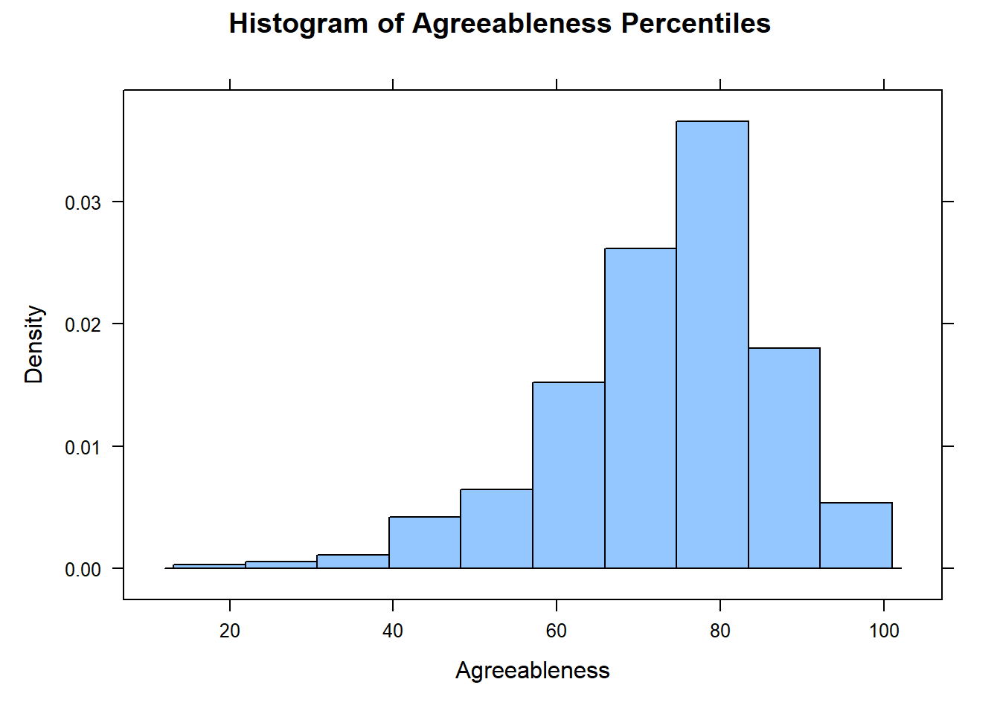
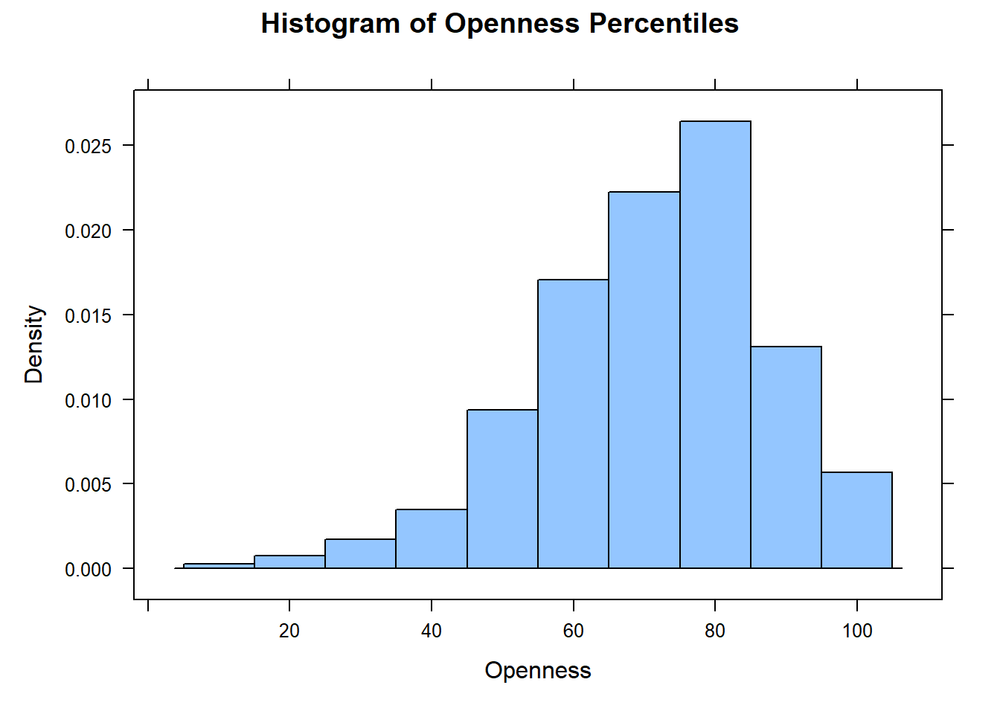
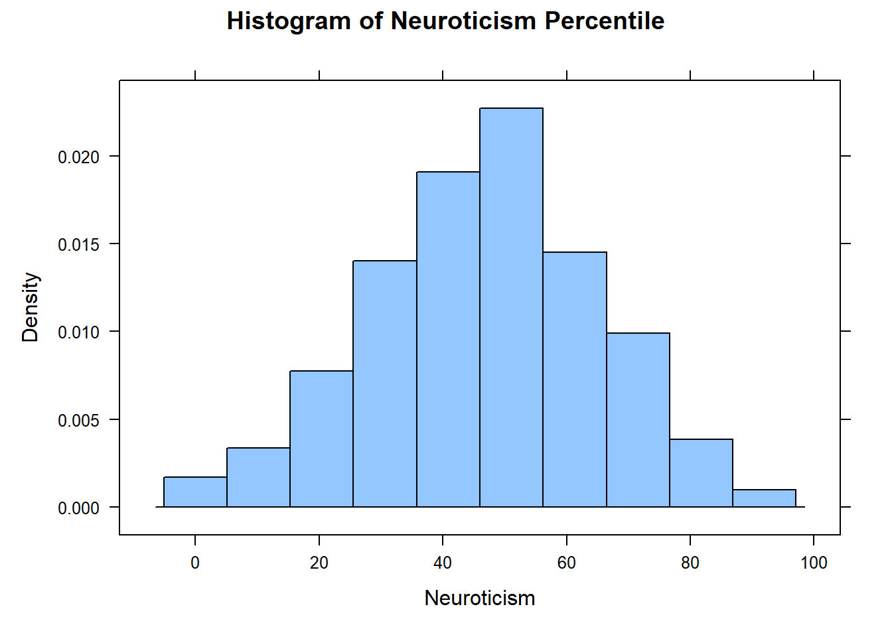
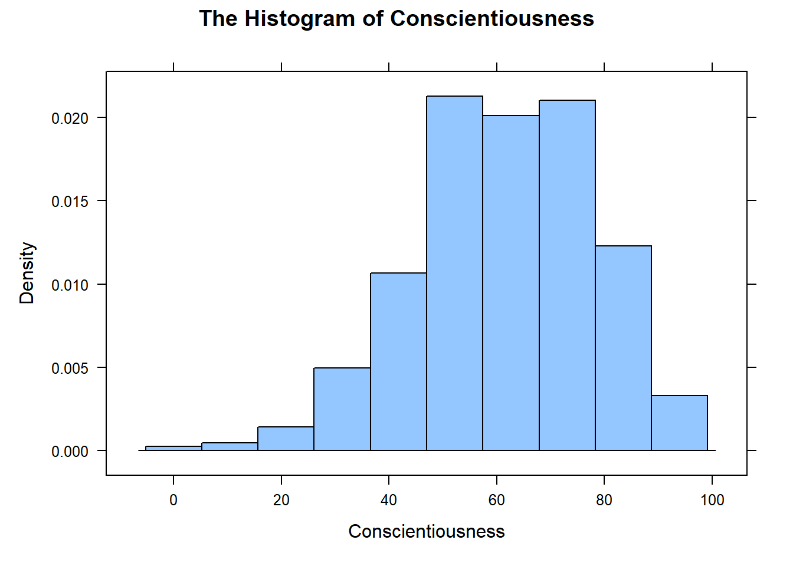

In this activity, you will execute statistical hypothesis tests and generate confidence intervals for each of the Big 5 personality traits using data collected from a random sample of Brother Cannon’s Math 221 students.
Question: What is the population of this analysis? Answer: Brother Cannon’s all MATH 221D students
For each personality trait, include:
A statement of the null and alternative hypotheses and why you chose the alternative you did.
Choose alpha, $= $
Check that you can trust the normality of the mean (n > 30 or qqPlot(respons_variable))
Run the one-sample t-test and state your conclusion (technical and contextual explanation)
Calculate a \(1-\alpha\) level confidence interval and describe in words what it means in context of the research question
Recall that we can use favstats() to get summary statistics, boxplot() and histogram() to get visualizations, and the t.test() function to get hypothesis tests and confidence intervals. Be sure to label your plots’ axes and include a title.
### I'm making a single variable called "extrov" that drops the missing values. You can do the same thing with the other traits to make analysis a little easierextrov <-na.omit(big5$Extroversion) histogram(extrov, xlab ="Extroversion", main ="Histogram of Extroversion Percentiles")

Perform the one-sample t.test:
# For Hypothesis Test:t.test(extrov, mu =50, alternative ="greater")
One Sample t-test
data: extrov
t = 6.6529, df = 403, p-value = 4.697e-11
alternative hypothesis: true mean is greater than 50
95 percent confidence interval:
55.25232 Inf
sample estimates:
mean of x
56.98267
Explain your conclusion:
Technical: Because the p-value is less than \(\alpha\), I reject the null hypothesis.
Contextual: I have sufficient evidence to suggest that Brother Cannon’s students are, on average, more Extroverted than the general population.
Create a Confidence Interval for the average extroversion of Brother Cannon’s students:
# For a Confidence Interval:t.test(extrov, conf.level =1-.025)$conf.int
I am 97.5% confident that the true average extroversion of Brother Cannon’s students is somewhere between the 54.62 and 59.34 percentiles.
Agreeableness
State your null and alternative hypotheses. For example, do you think Brother Cannon’s students are more, less, or just different than the general population?
\[H_o: \mu = 60\] \[H_a: \mu > 60\]
\[\alpha = 0.025\]
1. Create a table of summary statistics for Agreeableness:
favstats(big5$Agreeableness) %>% knitr::kable()
min
Q1
median
Q3
max
mean
sd
n
missing
21
67
75
81
100
73.43457
13.24909
405
0
Create a histogram of Agreeableness:
agreea <-na.omit(big5$Agreeableness)histogram(agreea, xlab ="Agreeableness", main ="Histogram of Agreeableness Percentiles")

Perform the one-sample t.test:
t.test(agreea, mu =60, alternative ="greater")
One Sample t-test
data: agreea
t = 20.406, df = 404, p-value < 2.2e-16
alternative hypothesis: true mean is greater than 60
95 percent confidence interval:
72.34919 Inf
sample estimates:
mean of x
73.43457
Explain your conclusion:
Technical: Because the P-value is less than alpha value (0.025), I reject the null hypothesis.
Contextual: I have sufficient evidences to suggest that the average agreeableness score of Brother Cannon’s students is more than 60.
Create a Confidence Interval for the average agreeableness of Brother Cannon’s students:
# For a Confidence Interval:t.test(agreea, conf.level =1-0.025)$conf.int
Explain your confidence interval:
I’m 97.5% sure that the real agreeableness mean score of Brother Cannon’s students is between 71.95341 and 74.91572 percentiles.
Openness
State your null and alternative hypotheses:
\[H_o: \mu = 75\] \[H_a: \mu ≠ 75\]
\[\alpha = 0.025\]
Create a table of summary statistics for Openness:
favstats(big5$Openness) %>% knitr::kable()
min
Q1
median
Q3
max
mean
sd
n
missing
10
60
73
83
100
71.81111
16.40637
405
0
Create a histogram of Openness:
openn <-na.omit(big5$Openness)histogram(openn, xlab ="Openness", main ="Histogram of Openness Percentiles")

Perform the one-sample t.test:
t.test(openn, mu =75, alternative ="two.sided")
One Sample t-test
data: openn
t = -3.9116, df = 404, p-value = 0.0001075
alternative hypothesis: true mean is not equal to 75
95 percent confidence interval:
70.20847 73.41375
sample estimates:
mean of x
71.81111
#You can ignore the alternative for two.sided since it's default
Explain your conclusion:
Technical: Since the P-value(0.0001075) is less than alpha value(0.025), I reject the hypothesis.
Contextual: We have sufficient evidence to suggest the true average Openness percentiles of Brother Cannon’s students is not equal to 75.
Create a Confidence Interval for the average openness of Brother Cannon’s students:
# For a Confidence Interval:t.test(openn, conf.level =1-0.025)$conf.int
Explain your confidence interval:
I’m 97.5% confident that the real average openness percentile of Brother Cannon’s students is located between 69.97700 and 73.64523 percentiles.
Neuroticism
State your null and alternative hypotheses:
\[H_o: \mu = 50\] \[H_a: \mu > 50\]
\[\alpha = 0.025\]
1. Create a table of summary statistics for Neuroticism:
favstats(big5$Neuroticism) %>% knitr::kable()
min
Q1
median
Q3
max
mean
sd
n
missing
0
35
48
60
92
47.39012
18.18166
405
0
Create a histogram of Neuroticism:
neurot <-na.omit(big5$Neuroticism)histogram(neurot, xlab ="Neuroticism", main ="Histogram of Neuroticism Percentile")

Perform the one-sample t.test:
t.test(neurot, mu =50, alternative ="greater")
One Sample t-test
data: neurot
t = -2.8888, df = 404, p-value = 0.998
alternative hypothesis: true mean is greater than 50
95 percent confidence interval:
45.90066 Inf
sample estimates:
mean of x
47.39012
Explain your conclusion:
Technical: Since the P-value (0.998) is bigger than alpha value, I won’t reject the hypothesis.
Contextual: I have sufficient evidences to suggest that the average of Neuroticism percentiles of Brother Cannon’s students is 50.
Create a Confidence Interval for the average neuroticism of Brother Cannon’s students:
# For a Confidence Interval:t.test(neurot, conf.level =1-0.025)$conf.int
Explain your confidence interval:
I’m 97.5% confident that the true average of Neuroticism percentiles of Brother Cannon’s student is located between 45.35754 and 49.42270 percentiles.
Conscientiousness
State your null and alternative hypotheses:
\[H_o: \mu = 50\] \[H_a: \mu > 50\]
\[\alpha = 0.025\]
1. Create a table of summary statistics:
cons <-na.omit(big5$Conscientiousness)histogram(cons, xlab ="Conscientiousness", main ="The Histogram of Conscientiousness")

Perform the one-sample t.test:
t.test(cons, mu =50, alternative ="greater")
One Sample t-test
data: cons
t = 13.467, df = 404, p-value < 2.2e-16
alternative hypothesis: true mean is greater than 50
95 percent confidence interval:
59.7227 Inf
sample estimates:
mean of x
61.07901
Explain your conclusion:
Technical: Since the p-value(< 2.2e-16) is less than alpha(0.025), I reject the hypothesis.
Contextual: I have sufficient evidence to suggest the real average of Conscientiousness Percentiles of Brother Cannon’s students is greater than 50.
Create a Confidence Interval for the average conscientiousness of Brother Cannon’s students:
# For a Confidence Interval:t.test(cons, conf.level =1-0.025)$conf.int
Explain your confidence interval:
I’m 97.5% confident that the real average of Conscientiousness Percentiles of Brother Cannon’s students is located between 59.22813 and 62.92989